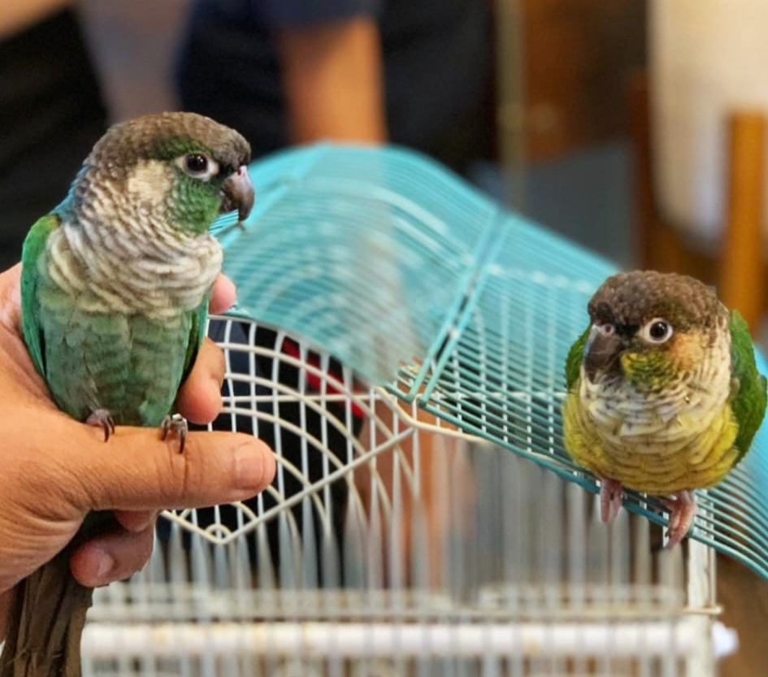
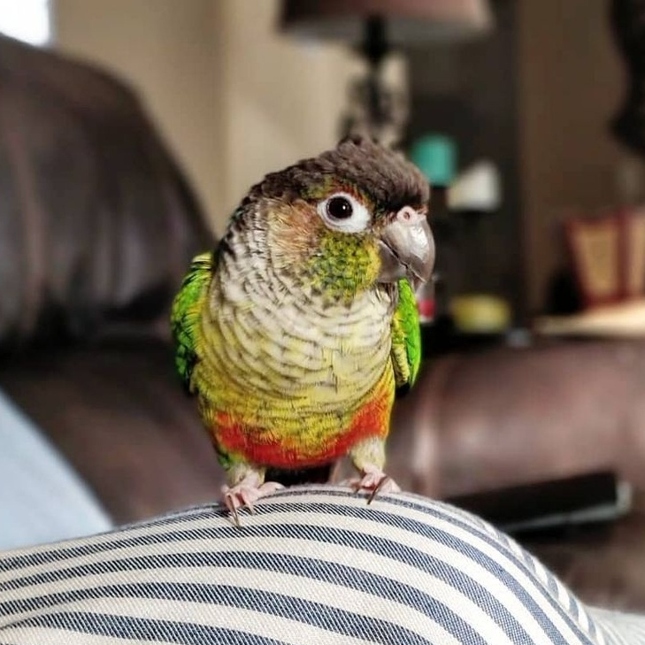
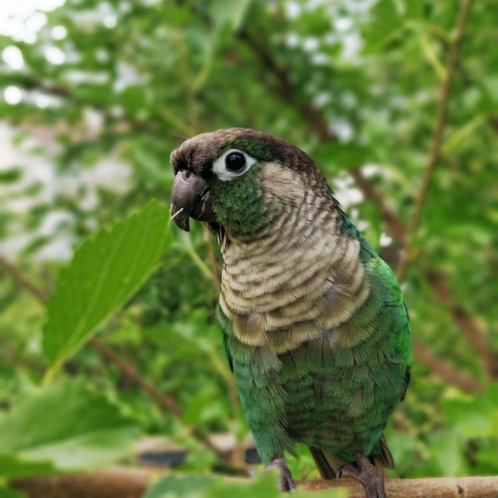

I have two pet parrots! They are both green cheek conures, a species of parrots, but they are a bit different from each other. My older bird, Tota, is a yellow sided green cheek conure, while my other one, named Chotu, is a green cheek conure. Yellow sided green cheek conures are a sub-species of green cheek conures, so they are extremely similar. If you would like to learn more about green cheek conures, click here.

Sun Conures
Golden-Capped Conures
Blue Crowned Conures
White Eyed Conured
Queen of Bavaria Conures
We have had Tota since she was 6 months old, and she turned 9 in March, so we've had her for quite a while! The funny thing about Tota is that her name literally means "parrot." She doesn't talk much, the only words she says are "Tota" and "Didi," which means older sister, and that's what she calls me!

We got Chotu earlier this year when he was about 1.5 years old, and he just turned 2 in October! Like Tota, he doesn't talk much, and only says "Chotu." I don't believe their specific species is very well known for talking. Chotu literally means "small," which is funny because he is already a little bit bigger than Tota, despite being much younger than her, but he still acts like a little toddler at times.

Copyright © 2021. Sakeena Younus. All rights reserved by their respective parties.